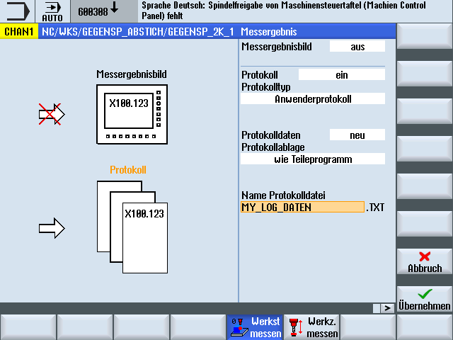

Die Funktion beruht darauf, dass der Anwender den Inhalt seiner Protokollzeilen selbst frei definiert und in einem Feld von Stringvariablen (Stringlänge 200) hinterlegt.
Durch Aufruf eines neuen Zyklus CYCLE160 wird der Inhalt dieses Stringfeldes protokolliert. Die Protokollierung beginnt immer beim Feldindex 0 und es wird so lange protokolliert, bis ein Leerstring (d. h. Stringlänge 0) vorgefunden wird.
Für einfache Anwendungen ist im Baustein PGUD ein NCK-globales Feld von Stringvariablen vordefiniert:
DEF NCK STRING[200] S_PROTTXT[10]
D. h., es können sofort 10 Zeilen protokolliert werden.
Sollte das nicht ausreichen, kann vom Anwender alternativ in einem eigenen GUD-Baustein (z. B. MGUD oder UGUD) ein zweites Stringfeld mit dem vordefinierten Namen S_USERTXT[n] von beliebiger Länge angelegt werden:
DEF NCK STRING[200] S_USERTXT[n]
Die Protokollierfunktion prüft das Vorhandensein dieses Feldes S_USERTXT. Wenn es vorhanden ist, wird der Inhalt dieses Feldes protokolliert, wenn es nicht vorhanden ist, der Inhalt von S_PROTTXT.
An der Programmstelle, an welcher der CYCLE160 aufgerufen wird, erfolgt die Protokollierung entsprechend dem durch den CYCLE150-Aufruf eingestellten Protokollierziel – genau wie beim Protokollieren von Messergebnissen.
Mit dieser Funktion ist es möglich, sowohl ein komplett anwenderspezifisches Protokoll (ohne Bezug zum Messen) auszugeben oder zusätzliche Zeilen in Standardprotokolle einzufügen.
Sollen zusätzliche Zeilen in Standardprotokolle im Tabellenformat geschrieben werden, muss der Anwender selbst für die Spaltenformatierung in diesen Strings sorgen (Trennzeichen „;“ einfügen).
In der Eingabemaske des CYCLE150 zur Protokollsteuerung wird "Anwenderprotokoll“ ausgewählt.
Es gibt keinen Unterschied zwischen Textformat und Tabellenformat – der Anwender bestimmt den Inhalt selbst. Das entsprechende Auswahlfeld wird bei Anwenderprotokoll weggeblendet.
Wird der Pfad eingegeben, erfolgt das mit demselben Dialog wie beim Standardprotokoll.
Eingabemaske Anwenderprotokoll
Im Teileprogramm ist Folgendes zu schreiben:
CYCLE150-Aufruf zum Einschalten des Anwenderprotokolls
Zuweisung des Protokollinhalts an die vordefinierten Stringvariablen
CYCLE160 zur Ausgabe des Protokollinhalts
Der CYCLE160 hat keine Übergabeparameter. Der Anwender muss ihn ohne Eingabemaske selbst programmieren.
Programmierbeispiel:
... | |
| ; Protokollieren EIN |
| ; Feld alte Daten löschen |
| ; Protokollinhalt zusammenstellen |
| |
| ; Programmierung Leerzeile: 1 x Blank |
| |
| |
| ; Anwenderprotokoll schreiben |
... | |
| |
Protokollauszug:
MASCHINE: ABC_12345
LOGFILE KOMPENSATIONSDATEN
WERT1 = 123.456
WERT2 = 789.333
Erläuterungen:
N50 … Protokollieren wird eingeschaltet
Ziel: in denselben Pfad wie das aufrufende Programm
das Protokoll wird fortgeschrieben
Protokolltyp: Anwenderprotokoll
Protokollieren "ein"
N52 - N56 Protokollinhalt
N60 … CYCLE160-Aufruf: jetzt werden Daten geschrieben
Wert 1 und Wert 2 spiegeln die Inhalte der R-Parameter R101 und R102 zum Zeitpunkt der Protokollausgabe wider.
Programmierbeispiel:
--- | |
| ; Protokollieren EIN, Kopf schreiben |
| ; Feld alte Daten löschen |
| ; Anwenderdaten beschreiben |
| |
| |
| |
| ; Anwenderdaten ins Protokoll schreiben |
| |
| |
| |
... | |
| |
Protokollauszug:
************************************************************************************************** | |
|
|
| |
| |
| |
************************************************************************************************* | |
BOHRUNG DM 20H7
GROESSTMASS:20.021
KLEINSTMASS:20.000
SPINDELTEMPERATUR:68.7 GRD
---------------------------------------------------------------------------------------------------------------- | ||
| : |
|
| ||
---------------------------------------------------------------------------------------------------------------- | ||
| ||
| ||
|
| |
-------------------------------------------------------------------------- | ||
|
|
|
|
|
|
|
|
|
-------------------------------------------------------------------------- | ||
| Setpoint | Measured | Difference |
|
|
|
|
|
|
|
|
|
|
|
|
--------------------------------------------------------------------------------------------------------------- | |||